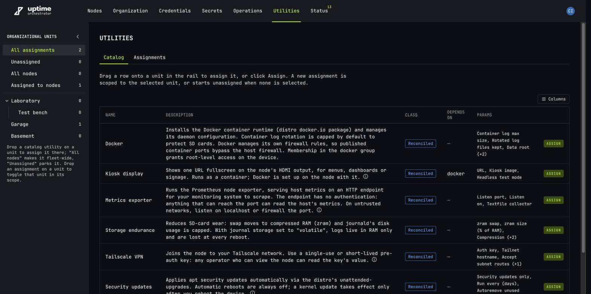
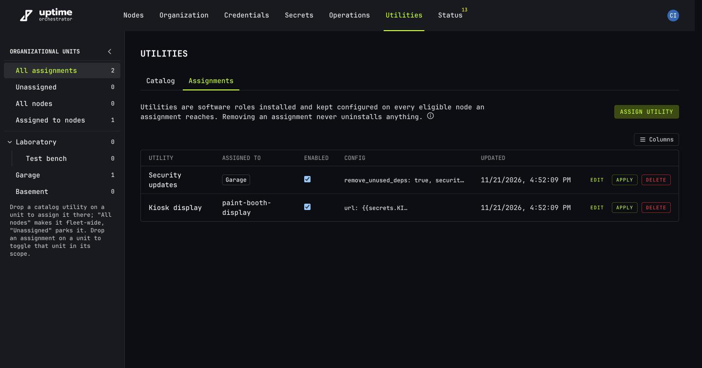
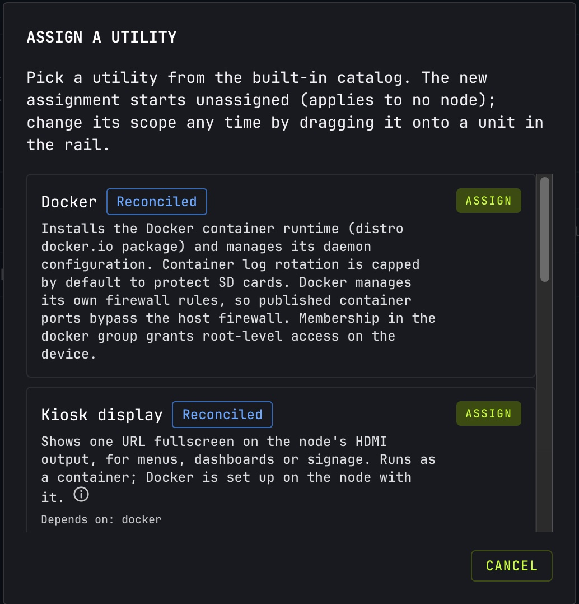
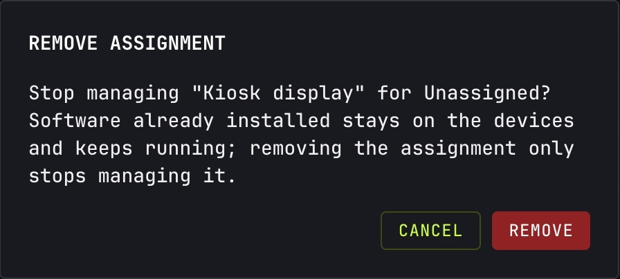
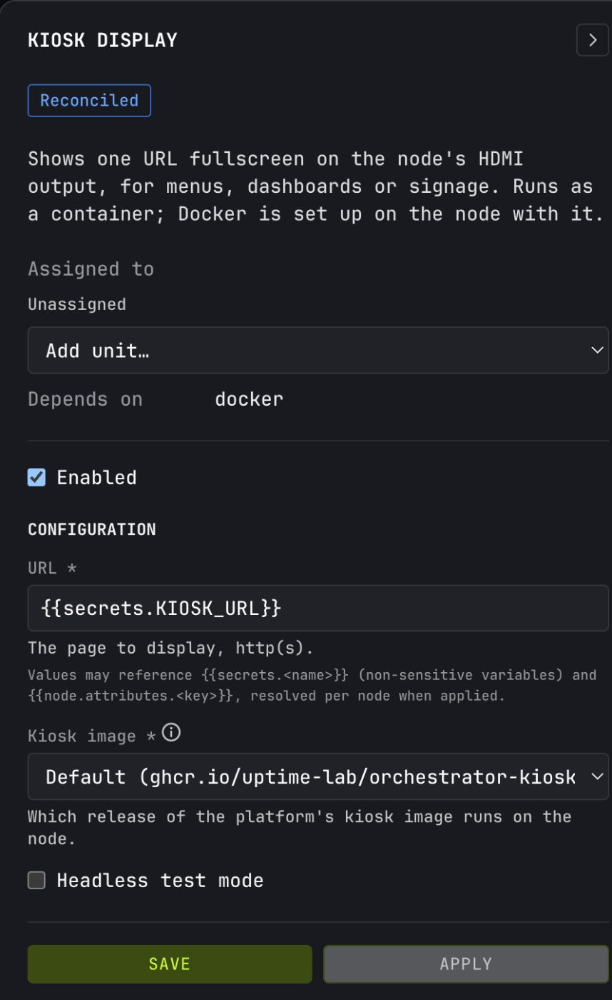
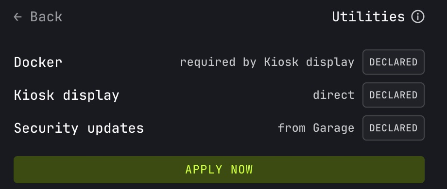

Utilities: managed software
Assign built-in software roles — security updates, Docker, a kiosk display, VPNs, metrics — to units or nodes and keep them installed and configured.
A utility is a software role the platform installs and keeps configured on every eligible node an assignment reaches: automatic security updates, Docker, a fullscreen kiosk, a VPN client. You pick one from a built-in catalog, assign it to a unit, the whole account or one node, set its parameters, and apply. A playbook is something you run once; a utility is a state the node holds.
Assignments follow the unit model in Organizational units and policies: a node gets the utilities assigned to itself, its unit, its parent unit and the whole account. If the same utility is assigned at several levels, the nearest assignment wins with its whole configuration — a node-level kiosk assignment overrides the unit's URL for that one node.
The catalog
Open Utilities and select the Catalog tab. The catalog is built into the platform; new utilities arrive with platform updates.

| Utility | What it does | Parameters |
|---|---|---|
| Docker | Installs the distribution's Docker engine and manages its daemon settings, with container log rotation capped by default to spare SD cards. | Container log max size, Rotated log files kept, Data root, Registry mirrors, Live restore |
| Kiosk display | Shows one web page fullscreen on the node's HDMI output, for dashboards, menus or signage. Depends on Docker. | URL, Kiosk image, Headless test mode |
| Metrics exporter | Runs the Prometheus node exporter so your monitoring can scrape CPU, memory, disk, network and temperature metrics. | Listen port (default 9100), Listen on (all or localhost), Textfile collector |
| Storage endurance | Reduces SD-card wear: swap in compressed RAM (zram) and a cap on the system journal's disk use. | zram swap, zram size (% of RAM), Compression, Journal disk cap, Journal storage |
| Tailscale VPN | Joins the node to your Tailscale network. Needs agent 0.6.11 or newer. | Auth key, Tailnet hostname, Accept subnet routes, Advertise as exit node |
| Security updates | Applies security updates automatically with the distribution's unattended-upgrades. Never reboots on its own. | Security updates only, Run every (days), Autoremove unused dependencies |
| ZeroTier network | Joins the node to a ZeroTier virtual network; you then authorize it in ZeroTier Central. | Network ID |
Class is Reconciled for every utility today: the platform keeps the node converged to the assignment. Depends on names a utility installed along with it. The info icon next to a description adds detail.
Some descriptions carry warnings worth reading before you assign:
- Docker: membership in the
dockergroup is root-equivalent, and ports published by containers bypass the host firewall. - Metrics exporter: the endpoint has no authentication. On untrusted networks choose localhost or firewall the port.
- Storage endurance: with Journal storage set to
volatile, logs live in RAM and are lost at every reboot. - Tailscale VPN: anyone who can view the node can read the auth key. Use a single-use or short-lived key, ideally stored as a variable (see below).
- Security updates: a kernel update takes effect only after you reboot the node yourself.
Assignments
The Assignments tab lists what is assigned where.

The columns are Utility, Assigned to (a unit chip, All nodes, a node name, or Unassigned), Enabled, Config (a summary of the parameters) and Updated, followed by Edit, Apply and Delete. The rail filters by scope: Unassigned, All nodes, Assigned to nodes and each unit.
Assign a utility
- Select a unit in the rail, or nothing to start unassigned.
- Click Assign utility and pick one from the list, or click Assign on a row of the Catalog tab. You can also drag a catalog row onto a unit.
- The new assignment opens in a panel. Set its parameters and click Save.
- When you are ready, click Apply.

An unassigned assignment reaches no node, which makes it a safe place to prepare a configuration. To change the scope later, use Add unit… in its panel, click × on a unit chip, or drag the assignment row onto a unit in the rail (dropping toggles that unit in or out of the scope). One assignment can cover several units. A given utility can have only one assignment per target; the UI refuses a second.
Configure

The panel shows the description, Assigned to, Depends on, an Enabled checkbox and the Configuration fields. Parameters marked * are required. Empty optional fields use the default shown in their placeholder.
Text parameters may reference {{secrets.NAME}} and {{node.attributes.KEY}}; the panel says so under the fields. These are resolved per node when the utility is applied. Only variables can be referenced — a write-only secret is refused here, because a utility's settings can be read back from the device. See Secrets and variables.
Apply sends what is saved, not what is on screen: save your edits first.
Apply and per-node state
Apply sends the assignment's configuration to every eligible node it reaches. Online nodes receive it at once; offline nodes queue it for when they reconnect on their installed OS. A dialog then lists the per-node results: Dispatched, Queued — delivers when the node reconnects, or Skipped with a reason.
To see a node's utilities, open it on the Nodes page and go to Properties → Utilities.

Each line shows the utility, where it comes from (from Garage, direct, account-wide, or required by … for a dependency), and its state:
| Badge | Meaning |
|---|---|
| declared | Resolved for this node but never applied to it. |
| update pending | Applied once, but the configuration has changed since. Apply again. |
| applied | The device confirmed this exact configuration. |
| failed | The last apply failed for this utility; hover the badge or check the node's command history for the reason. |
Apply now sends the node's whole current utility set to that one node. Each apply is recorded in the node's command history as Apply utility configuration. One utility failing does not mark the others on the node as failed.
On the unit's Contents tab, Utilities sums this up as "applied on N of M" (Organization).
When a node connects or reconnects on its installed OS, the platform also compares what it last confirmed with what the assignments now say, and re-applies if they differ. A node that keeps failing the same configuration is retried three times and then left alone until you edit the assignment or apply manually.
Disable or remove
Clear Enabled (and save) to switch an assignment off without losing its configuration. A disabled assignment is ignored when the platform works out each node's utilities, so an assignment of the same utility further up the chain takes over, if there is one. Like removal, disabling uninstalls nothing.
Delete removes the assignment after a confirmation:

Removing an assignment stops the platform managing the software; it does not uninstall it, stop it or undo its configuration. Tailscale stays installed and logged in, ZeroTier stays joined, a kiosk keeps showing its page. To remove the software, run a playbook or do it on the node.
Eligibility
A node receives a utility only when:
- it runs its installed OS — a node booted into recovery holds utility applies until it is back;
- it runs the full agent, version 0.6.5 or newer (some utilities need more: Tailscale needs 0.6.11) — otherwise the apply is skipped with "update the agent";
- its OS is Debian-based (Ubuntu, Raspberry Pi OS): utilities install packages with apt;
- the utility's own needs are met — the kiosk needs Docker (installed for it automatically) and an HDMI display.
An ineligible node in scope still lists the utility in its panel, so you can see what it would get.
The kiosk display in more detail
The kiosk shows one URL fullscreen on the HDMI output. It runs as a container on Docker: a minimal Wayland compositor with a Chromium browser, from the platform's own kiosk image. Keyboard and mouse are disabled, and installing, updating or removing the kiosk does not change the OS.

- URL (required) — the page to display,
httporhttps. Using a variable such as{{secrets.KIOSK_URL}}lets you change the page for many screens in one place; a changed value reaches each screen at the next apply of the assignment, not on its own. - Kiosk image (required) — which release of the platform's kiosk image to run. The list contains the published releases; the newest is the default. Keep a unit on one release, and change it here to roll forward or back.
- Headless test mode — renders in software with no display attached. For testing only; leave it off on a real screen.
You do not assign Docker yourself: assigning the kiosk brings Docker along with its default settings, shown as required by Kiosk display. If you assign Docker explicitly, your assignment's settings win.
In the example account, Kiosk display is assigned directly to the node paint-booth-display:

The node also receives Security updates from Garage. All three are declared: the node has been offline since the assignment was made, so nothing has been applied to it yet. When it reconnects, the platform applies the set.
To show a different page on one screen of a unit-wide kiosk, add a second kiosk assignment for just that node. The node-level assignment overrides the unit's for that node only.